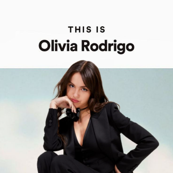
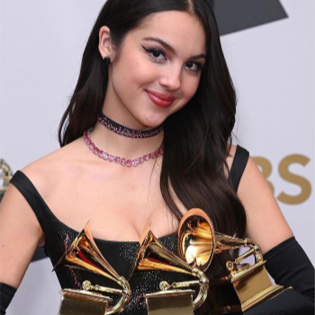
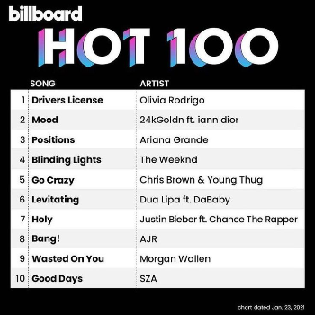
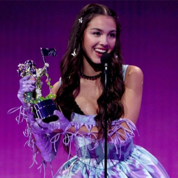
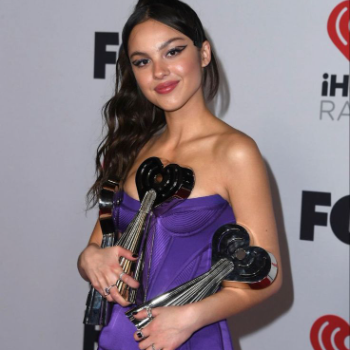
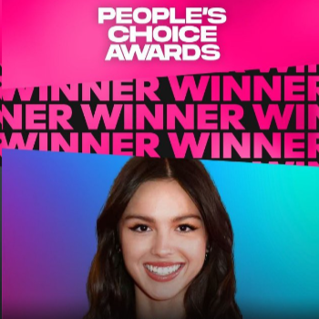
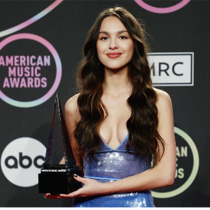
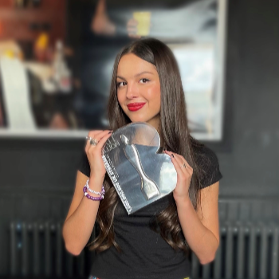
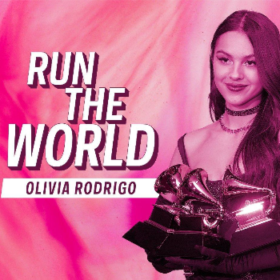

logró llevarse a casa 3 premios en las categorías de Mejor Artista Nuevo, Mejor Álbum Vocal de Pop y Mejor Interpretación Pop como Solista. El éxito de Olivia no se detuvo ahí. En los Premios Billboard Music, ha ganado un total de 7 premios, incluyendo los prestigiosos títulos de Artista del Año y Mejor Álbum de Pop, con un total de 14 nominaciones. Su talento visual y creativo también ha sido reconocido en los MTV Video Music Awards, donde ha ganado 4 premios, incluyendo Video del Año y Mejor Video Pop, sumando un total de 23 nominaciones. En los iHeartRadio Music Awards,
Todos sus Premios!

A lo largo de su meteórica carrera, Olivia Rodrigo ha acumulado una impresionante cantidad de premios y nominaciones, consolidándose como una de las figuras más influyentes y aclamadas de la música pop contemporánea. Desde su debut con el sencillo "Drivers License" en 2021, Olivia ha capturado la atención mundial no solo por su talento musical, sino también por su capacidad para conectar emocionalmente con su audiencia. En 2022, Olivia Rodrigo fue reconocida en los premios Grammy con 7 nominaciones por su álbum debut "SOUR" y los sencillos "Drivers License" y "Good 4 U". De estas nominaciones,
Olivia ha sido destacada con 5 premios, incluyendo Artista del Año y Canción del Año, y ha recibido 18 nominaciones en esta plataforma. Además, en los People's Choice Awards, Olivia ha ganado 4 premios, incluyendo Artista Favorita y Canción Favorita, con un total de 9 nominaciones. Olivia Rodrigo también ha brillado en los American Music Awards, donde ha sido nominada 7 veces y ha ganado el premio a Artista Nuevo del Año.
Su talento ha sido reconocido internacionalmente en los Brit Awards, donde ganó el premio a Mejor Artista Nuevo Internacional y ha sido nominada en 4 categorías. Además de estos prestigiosos premios, Olivia ha roto 4 récords mundiales Guinness, incluyendo el récord de la mayor cantidad de reproducciones diarias de una canción no festiva en Spotify, lo que destaca su popularidad y alcance global. Más allá de los premios, Olivia Rodrigo ha sido incluida en la lista Time 100 de las personas más influyentes del mundo en 2021 y fue nombrada Mujer del Año por Billboard en su evento Women in Music en 2022. Variety también la reconoció como Compositora del Año en 2021.

Premios Grammy:
En 2022, Olivia Rodrigo fue nominada a 7 premios Grammy por su álbum "SOUR" y sus sencillos "Drivers License" y "Good 4 U". De estas nominaciones, ganó 3 premios en las categorías de Mejor Artista Nuevo, Mejor Álbum Vocal de Pop y Mejor Interpretación Pop como Solista

Premios Billboard Music:
Olivia ha ganado 7 premios Billboard Music, incluyendo Artista del Año y Mejor Álbum de Pop. Ha sido nominada en 14 ocasiones.

Premios MTV Video Music Awards:
Ha ganado 4 premios MTV, incluyendo Video del Año y Mejor Video Pop. Ha recibido 23 nominaciones en total.

Premios iHeartRadio Music Awards:
Olivia ha sido reconocida con 5 premios, incluyendo Artista del Año y Canción del Año, y ha sido nominada en 18 categorías diferentes.

Premios People's Choice Awards:
Ha ganado 4 premios, incluyendo Artista Favorita y Canción Favorita, con un total de 9 nominaciones.

Premios American Music Awards:
En los American Music Awards, ha sido nominada 7 veces y ha ganado el premio a Artista Nuevo del Año.

Premios Brit:
Olivia ganó el premio a Mejor Artista Nuevo Internacional en los Brit Awards y ha sido nominada en 4 categorías.

Guinness World Records:
Olivia ha roto 4 récords mundiales Guinness, incluyendo el récord de la mayor cantidad de reproducciones diarias de una canción no festiva en Spotify.